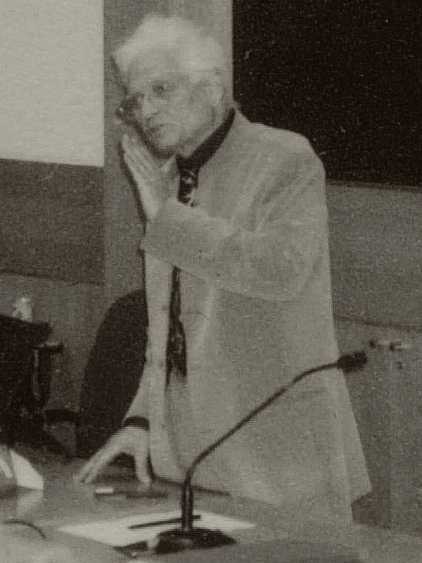

二十世纪法国哲学家，解构主义的创始者。他以对"在场形而上学"的批判为轴，揭示西方哲学二千年来对"在场""起源""确定性"的执着如何建立在自我消解的矛盾之上。解构不是否定，而是一种让文本自行显露其内在断裂的阅读策略。
德里达的思想围绕"在场"与"缺席"的张力展开。以下六个概念构成其哲学骨架——从解构的阅读策略出发，经过延异、书写学、在场形而上学，到后期的药与幽灵性，揭示意义如何在差异与延迟中产生，而非作为"在场"被给予。点击卡片进入详细解读。
不是"拆解"也不是"否定"。解构是一种阅读策略：揭示文本内部的矛盾和等级秩序，展示二项对立本身如何不稳定。解构不是一种方法而是一种"事件"——它在文本中自行发生。
differ（差异）与 defer（延迟）的合成词。意义不是"在场的"，而是通过差异产生、通过延迟到来。没有"原初的意义"，只有意义的无限延迟和差异。
传统哲学将言语置于书写之上。德里达反转：书写不是言语的派生物，言语本身就是一种书写。书写的"缺席"比言语的"在场"更接近语言的本质。
西方哲学从柏拉图到胡塞尔的根本预设：存在=在场，真理=在场的显现。德里达的解构目标就是这个"在场的特权"——它贯穿了整个传统。
柏拉图《斐德罗篇》中文字被比作"药"——既是毒药又是解药。任何"补充"既是对原初的"污染"又是对原初的"补充"——补充揭示了原初的"不足"。
德里达后期概念。存在不是"在场"而是"幽灵"——过去从未过去，未来已经到来。"学会与幽灵共存"——不是驱鬼，而是承认正义总是面向那些不在场的人。
德里达1967年一年内出版三部著作，奠定了解构主义的基础。此后二十余年间，他将解构策略推向伦理、政治、法律、宗教等领域。以下五部构成理解其思想的主干——每部含详细解读。
书写学的系统阐述。德里达提出"文字不是言语的派生物"，建立了一门关于书写的科学——书写学。
对胡塞尔"在场"的解构。德里达从胡塞尔的符号理论内部揭示：即使是"自我倾听"的声音，也已包含差异和延迟。
十一篇论文合集。其中"结构、符号与游戏"是德里达最重要的方法论文本——宣布了"结构的去中心化"。
后冷战时代的正义问题。德里达借《哈姆雷特》的幽灵意象，回应福山"历史终结"论——正义总是面向那些不在场的人。
伦理与不可决定的。德里达以卡夫卡《在法门前》和托尔斯泰《谢尔盖神父》为轴，探讨责任的悖论。
先读《声音与现象》前几章——篇幅较短，是德里达对胡塞尔符号理论的解构，可以快速把握解构的操作方式。然后读《写作与差异》中的"结构、符号与游戏"——这是德里达最清晰的方法论陈述，"去中心化"概念在此提出。
这是德里达最重要的系统著作。第一部分是全书核心——提出"书写学"的基本框架，解构卢梭的"言语优越论"。建议精读第一部分，后半部分关于卢梭的详细分析可选择性阅读。
读《马克思的幽灵》理解德里达后期的政治-伦理转向——从文本解构到正义问题。此时可对照胡塞尔《逻辑研究》和海德格尔《关于人道主义的信》，理解德里达与现象学、存在主义的对话关系。
读《赠予死亡》理解德里达的伦理学——责任的悖论与不可决定性。可延伸阅读《友爱的政治学》《法律的力量》等后期著作，理解解构如何从文本分析走向正义与法律的思考。
本站是为系统学习德里达哲学而做的导读。内容以概念为骨架，以著作为血肉——概念页展开每个核心命题的定义、哲学阐述、实例说明与延伸思考；著作页逐部解读核心论点、结构要点和关键段落。
德里达的思想不是供人背诵的结论，而是一套阅读策略：关于意义如何在差异中产生、如何在延迟中到来、如何在"在场"的幻觉下隐藏着缺席的深渊。解构不是否定，不是相对主义，而是让文本自行显露其内在矛盾的一种耐心。导读不能替代原典，但可以帮助你在走进原典之前有一张地图。
后续将持续扩充核心概念的内容——新增概念卡片将直接追加到概念页中，无需改动其他页面。